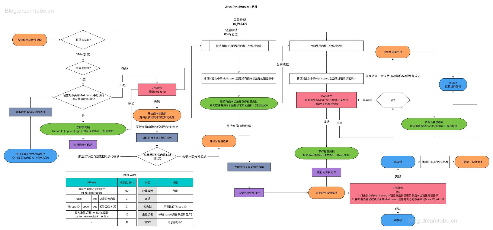

Java多线程系列--掌控面试，一文吃透Synchronized锁
前言
各位亲爱的读者朋友，我正在创作 Java多线程系列 文章，本篇我们将分析重点内容：锁
锁是 面试中的常客 ，也是多线程编码中 必不可少 的内容，无论是为了 "面试胜利" ，还是 "写出高质量的代码" ，我们都需要掌握它。
作者按：本篇按照自己有限的知识进行整理，如有谬误，还请读者在评论区不吝指出
了解系列以及总纲：Java多线程系列
本文篇幅较长，内容较为跳跃，可参考导图阅读：

前文拾遗 -- JAVA对象结构
先前已经发布过一篇系列文章：克服焦虑--图解JVM内存模型和JVM线程模型
其中还有一处关键知识没有展开："Java对象包含哪些内容"，这部分内容和锁的实现有关，本篇将由此继续展开。
单刀直入，在HotSpot虚拟机中，一个对象实例可以被划分出三块信息：
- 对象头 Header
- 实例数据 Instance Data，亦有称之对象体
- 对齐填充 Padding
其中对齐填充可能存在，实例数据是供给 应用程序逻辑 使用的，存储了实例的字段信息。接下来重点探讨对象头。
Java对象头
对象头部分的信息主要面向JVM，包含：
- Mark Word
- kclass, 对象对应的类的元数据指针
- array length ，仅数组对象才拥有
整体划分如图所示：

图片来自网络搜索，水印为Java帮帮
Mark Word
Mark Word 用于存储对象运行时数据： 哈希、GC分代年龄、锁状态标志、线程持有的锁、偏向线程ID、偏向时间戳 等。
查找 HotSpot中markOop的doc如下：
// The markOop describes the header of an object.
// Note that the mark is not a real oop but just a word.
// It is placed in the oop hierarchy for historical reasons.
//
// Bit-format of an object header (most significant first, big endian layout below):
//
// 32 bits:
// --------
// hash:25 ------------>| age:4 biased_lock:1 lock:2 (normal object)
// JavaThread*:23 epoch:2 age:4 biased_lock:1 lock:2 (biased object)
// size:32 ------------------------------------------>| (CMS free block)
// PromotedObject*:29 ---------->| promo_bits:3 ----->| (CMS promoted object)
//
// 64 bits:
// --------
// unused:25 hash:31 -->| unused:1 age:4 biased_lock:1 lock:2 (normal object)
// JavaThread*:54 epoch:2 unused:1 age:4 biased_lock:1 lock:2 (biased object)
// PromotedObject*:61 --------------------->| promo_bits:3 ----->| (CMS promoted object)
// size:64 ----------------------------------------------------->| (CMS free block)
//
// unused:25 hash:31 -->| cms_free:1 age:4 biased_lock:1 lock:2 (COOPs && normal object)
// JavaThread*:54 epoch:2 cms_free:1 age:4 biased_lock:1 lock:2 (COOPs && biased object)
// narrowOop:32 unused:24 cms_free:1 unused:4 promo_bits:3 ----->| (COOPs && CMS promoted object)
// unused:21 size:35 -->| cms_free:1 unused:7 ------------------>| (COOPs && CMS free block)
32位和64位的虚拟机（未开启压缩指针）中分别为32bit和64bit，开启压缩后为32bit
梳理64位虚拟机五种状态下的对象头：
|------------------------------------------------------------------------------------------------------------------|
| Object Header(128bits) |
|---------------------|--------------------------------------------------------------------------------------------|
| State | Mark Word(64bits) | Klass Word(64bits) |
|---------------------|--------------------------------------------------------------------------------------------|
| Nomal | unused:25|identity_hashcode:31|unused:1|age:4|biase_lock:1|lock:2 | OOP to metadata object |
|---------------------|--------------------------------------------------------------------------------------------|
| Biased | thread:54| epoch:2 |unused:1|age:4|biase_lock:1|lock:2 | OOP to metadata object |
|---------------------|--------------------------------------------------------------------------------------------|
| Lightweight Locked | ptr_to_lock_record:62 |lock:2 | OOP to metadata object |
|---------------------|--------------------------------------------------------------------------------------------|
| Heavyweight Locked | ptr_to_heavyweight_monitor:62 |lock:2 | OOP to metadata object |
|---------------------|--------------------------------------------------------------------------------------------|
| Marked for GC | |lock:2 | OOP to metadata object |
|---------------------|--------------------------------------------------------------------------------------------|
排版不方便的话看下图：

如果运行在 HotSpot openJdk VM 上，可以借助："org.openjdk.jol:jol-core:0.9" 打印对象头进行对照。
作者按：此处的知识我们留一个印象即可，Android同学可能只能拿来吹牛
归纳后知识概要如图：

注：32位
锁的常见概念、分类
我们平时会听到关于锁的各种概念名词，前文的表中，我们也看到了 偏向锁 轻量级锁 重量级锁 的身影，接下来简单聊一聊分类以及常见概念。
乐观锁 / 悲观锁
乐观锁和悲观锁是一种相对的 态度 。在并发的背景下，访问临界区时 可能会 发生 "冲突"，不同的态度演变出不同的策略。
悲观 地看，可以 认为冲突一定会发生 ：访问临界区时，自身线程的写入行为一定会影响其他线程，自身线程的读取行为一定会受到其他线程的写入影响！ 所以 必须要进行锁保护 ，通过 "独占"，"排他" 等特性，保障无冲突。 即：悲观地认为，不加锁的并发操作一定会出现冲突，必须加锁
乐观 地看，可以 认为发生冲突是场景限定的事件 ：读不会有冲突，但写入存在冲突可能。所以 只有在写操作时，进行冲突检测，检测到冲突时操作就会失败，返回错误信息
在Java中，悲观锁即各种实际的锁实现，而乐观锁即无锁编程，转为使用CAS算法。
独享锁 / 共享锁
锁可以被访问者独享或者共享，直白地讲：独享锁在某一时间点，只能被一个线程获取，其它线程必须等待锁被持有者释放之后，才可能获取到锁，而共享锁可以被多个线程获取。
独享锁又称独占锁、排它锁。
显然，共享锁认为持有它的线程们在并发操作时并不会发生冲突。
可重入锁 / 非可重入锁
从概念上看：一个线程在持有一个锁的时候，它内部能否再次（多次）申请该锁，如果可以则为可重入锁，否则为不可重入锁。
显然易见：不可重入 将大大增加 死锁 的机率。
作者按：但在线程的基础上实现类似协程的机制时，非可重入将具有重要意义。
公平锁 / 非公平锁
锁需要通过竞争获取，公平 / 非公平指的是 是否按照"先来后到"获取锁。
如果按照申请顺序分配锁，则为公平锁，否则为非公平锁。
我们常用的Synchronized即非公平锁，Java的可重入锁（ReentrantLock）默认为非公平锁，但可以实例化为公平锁。
非公平锁的优点在于吞吐量比公平锁大。
互斥锁、读写锁
独享锁、共享锁的具体实现，读写锁作为读模式时是共享锁。
Java中的 ReentrantLock 是互斥锁，ReadWriteLock 是读写锁实现。
分段锁
分段锁并非是一种锁，而是一种提高效率的设计思路，将临界区进行划分，当某一块区域的写入并不影响其他区域的读取时，就可以采用分段的思路， 对写入区域加锁，读取其他区域则无需竞争锁从而提高效率，例如 ConcurrentHashMap
就采用了这一设计
偏向锁 / 轻量级锁 / 重量级锁
专指 synchronized 的三种锁状态，并且关系到后文中的 锁升级 部分。
在前文中，我们花了很多篇幅梳理 对象头 中的 Mark Word，其中有三种状态：Biased，Lightweight Locked，Heavyweight Locked 于此对应。
- 偏向锁状态：同步代码一直被同一线程访问时，该线程会自动获取锁，降低获取锁的代价。
- 轻量级锁状态：在偏向锁状态时，一旦另一线程竞争该锁，则升级为轻量级锁，竞争的线程通过
有限的自旋尝试获取锁，如果锁的持有者在此过程中 释放了锁 ， 并被该线程成功获取锁，则可以避免阻塞，减少线程切换，* 挂起和恢复线程是较为昂贵的*。 - 重量级锁状态：当线程完成了有限的自旋后依旧未能获得锁，将不得不进行阻塞以免空耗CPU，此时锁升级为重量级锁
不难理解，按照Java的线程模型，仅多核CPU情况下，采用轻量级锁并利用自旋才有意义。如果是单核CPU，并不存在真正的时间意义上的线程并发，自旋时，持有锁的线程是挂起的，并无释放锁的可能
作者按：Java的线程模型可参见拙作：克服焦虑--图解JVM内存模型和JVM线程模型
自旋锁
基于CAS利用自旋去竞争锁实现同步的一种方式，如前文所言，发生竞争而产生自旋时，当前线程不会阻塞，所以不会直接导致系统调用，减少上下文切换的开销， 但如果一直竞争不到锁，将造成CPU空转，所谓的busy-waiting。对于计算密集型程序而言，可能会带来负面效果。
我们可以利用Atomic实现一个简单的 可重入自旋锁
public class ReentrantSpinLock {
private AtomicReference<Thread> cas = new AtomicReference<Thread>();
private int count;
public void lock() {
Thread current = Thread.currentThread();
if (current == cas.get()) {
count++;
return;
}
while (!cas.compareAndSet(null, current)) {
// Do nothing
}
}
public void unlock() {
Thread cur = Thread.currentThread();
if (cur == cas.get()) {
if (count > 0) {
count--;
} else {
cas.compareAndSet(cur, null);
}
}
}
}
很显然，这也是一个非公平锁、独享锁
Synchronized锁
synchronized 作为Java关键字，提供同步能力，其核心依赖于Java对象的对象头，当一个类对象被作为synchronized锁对象时，其即为 Monitor，JVM通过
进入、退出Monitor 来实现同步
class Foo {
synchronized static foo() {
}
synchronized void bar() {
}
void baz() {
synchronized (Foo.class) {
//同步块
}
}
}
如上代码中展示了三种同步的方式：
foo()中锁对应的Monitor为Foo.classbar()中锁对应的Monitor为 Foo 的对象实例baz()中的同步块可以用任意的对象作为Monitor，演示部分使用了Foo.class作为Monitor
注意，Monitor的选取务必慎重，不仅仅要从 同步 的需求角度出发，避免性能损耗，也要注意锁无法正常生效的问题。例如：
我们模拟5个线程同时竞争一个数（初始值为6）并做 -- 运算，读者是否认为它会按照 5、4、3、2、1 的顺序输出？
class Foo {
Integer integer = 6;
void minus() {
synchronized (integer) {
if (integer > 0) {
integer--;
}
System.out.println(Thread.currentThread().getId() + " -> i:" + integer);
}
}
static class MThread extends Thread {
final Foo foo;
final CountDownLatch latch;
MThread(Foo foo, CountDownLatch latch) {
this.foo = foo;
this.latch = latch;
}
@Override
public void run() {
super.run();
try {
latch.await();
foo.minus();
} catch (InterruptedException e) {
e.printStackTrace();
}
}
}
public static void main(String[] args) {
Foo foo = new Foo();
CountDownLatch latch = new CountDownLatch(1);
for (int i = 0; i < 5; i++) {
new MThread(foo,latch).start();
}
latch.countDown();
try {
Thread.sleep(1000);
} catch (InterruptedException e) {
e.printStackTrace();
}
}
}
多执行几次就会发现 可能 会像下面的结果，它并非是一个同步情况的结果，如果想要更顺利的模拟问题的出现，增大线程数即可
> Task :Foo.main()
13 -> i:3
15 -> i:4
12 -> i:3
14 -> i:1
11 -> i:2
如果读者注意了lint，会注意到提示：Synchronization on a non-final field 'integer'
很显然，上面的代码并未采用正确的Monitor，在 integer-- 的过程中，integer实例已经发生变化：
System.out.println(Thread.currentThread().getId() +
" -> i:" + integer+","+System.identityHashCode(integer));
我们增加identityHashCode，并增大并发数量到10，输出如下：
13 -> i:0,482590393
15 -> i:1,1722967101
11 -> i:3,1130778910
16 -> i:0,482590393
17 -> i:0,482590393
20 -> i:0,482590393
12 -> i:4,685260083
14 -> i:2,1983109557
19 -> i:0,482590393
18 -> i:0,482590393
显然，锁了个寂寞 。当然，该问题深入研究下去，读者可以一直挖到动态常量池，不再展开。
所以，编码中一定要保持好习惯：Monitor对象不可变，无形中就避开了bug。
锁升级
前文已经提到了锁的升级：
偏向锁 -> 轻量级锁 -> 重量级锁 , 锁的升级是单向的
这其实是 synchronized 内部实现上对锁方式的优化
转换原因
很显然，这一过程充分考虑各种锁的优点和缺点，在相应场景下以期获得最好的性能。
- 偏向锁：没有自旋、没有系统调用，所以 消耗少性能高 ，并且具有可重入特性，在
同一线程执行同步代码场景下是最优选择，但它具有 撤销锁消耗高 的缺点。 - 轻量级锁：前面已经提到，用CAS取代了阻塞，在
锁持有时间短的场景下是最优选择，可追求快速响应，但缺点是短时间内无法获取锁时，自旋消耗CPU资源。 - 重量级锁：具备
大吞吐量，未竞争到锁的线程不会自旋消耗资源，适合锁占用时间长，吞吐量需求大的场景
而从 偏向锁到轻量级锁，意味着多线程竞争，假定锁的持有时间不会太长，有限的自旋可以等到持有者释放锁，而当 轻量级锁升级到重量级锁 ，意味着这一 假设不成立 ，自旋只是在白白消耗，通过挂起和等待唤醒以提升吞吐量
转换过程

从OpenJdk的 WIKI -- Synchronization 可以得到这张图。
为广泛流传的下图的原版

一图胜千言，图中表现的非常明确，读者可以结合WIKI内容自行理解，不再多做赘述。
经常在课程广告中出现的一张图如下,收藏不等于学会：

图片水印Blog.Dreamtobe.cn
一段很长的后记
在拟定系列大纲时，本篇的原名为：Java多线程系列--掌控面试，一文吃透锁，然而写至 JDK中的Lock接口 时，
后知后觉的意识到将 不得不深入源码 并且涉及到 AQS，AQS的内容在大纲中已有单篇计划，展开则篇幅过长不利于阅读，不展开则实在无内容可写。
原章节内容权且作为 开端 、 引子 留于文末：
JDK中的Lock接口
在Jdk1.5之后，存在Lock接口：
public interface Lock {
//获取锁
void lock();
//获取锁，如果线程阻塞状态（未获取到而进入阻塞）被中断则抛出异常
void lockInterruptibly() throws InterruptedException;
//尝试获取锁
boolean tryLock();
//在给定时间内尝试获取锁，
boolean tryLock(long var1, TimeUnit var3) throws InterruptedException;
void unlock();
Condition newCondition();
}
前四个API均为获取锁的API，unlock 释放锁，通过Condition提供线程通信能力. Condition将在以后的文章中展开
有别于语言关键字 synchronized , 在使用角度上，Lock将需要使用者自行获取锁、释放锁。在内部实现上，区别于 Monitor模式 ，增加了更丰富的功能：
- 支持
锁的公平性 - 获取
当前线程调用lock的次数 - 获取
等待锁的线程数 - 查询
是否存在线程等待获取该锁 - 查询
指定的线程是否在等待获取该锁 - 查询
当前线程是否持有该锁 - 判断
锁是否已被持有 - 加锁时如果中断则不加锁，抛出异常
尝试获取锁的机制，如果锁未被其他线程持有则成功，否则返回失败，不会直接进入阻塞
很显然，限于目标和篇幅，这篇文章不会再和诸位读者一同探索源码，写至此处，我意识到真的无法做到标题中说的："一篇文章吃透锁"。 JDK中还有锁实现，例如常用的：
- ReentrantLock
- ReadWriteLock，一般使用实现类
ReentrantReadWriteLock
作者按：一旦开始深入，将势必谈及AQS，按照计划，这将于后续文章中展开，故本篇不再展开。望读者见谅
真正的后记
这一篇又断断续续写了超过一周，期间我也一度怀疑，这个系列要不要继续下去，对于读者而言，买本书钻研可能是比看本系列更加实在的行为，勘校后的知识准确性 、 文字的准确性 、
表达的结构性 都更胜一筹，博客仅能靠碎片化特性占点便宜。
但一件事情坚定了我将它写下去的信念，我翻看了往年的博客，清晰的意识到：
- 将脑海中的知识，整理后再做
结构化的输出，可以牢靠地掌握这些知识，并且在任意时刻都可以完成流畅的表达 - 通过对比，清晰的看到自己的成长
- 文字功力可以通过锻炼得到长足提升